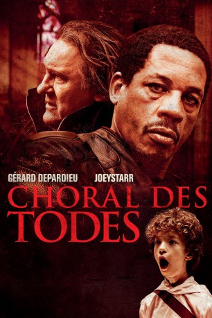

gesehen am 25.06.2015
gesehen am 25.06.2015Alternativ: Miserere (Englischer Titel) gesehen am 25.06.2015
 
 IMDB-Wertung: 5.7 / 10
IMDB-Wertung: 5.7 / 10  Metascore:
Metascore: 
In einer Pariser Kirche wird der musikalische Leiter eines Kinderchors tot aufgefunden. Der erst kürzlich pensionierte Kommissar Lionel Kasdan, der ein angesehenes Mitglied der Kirchengemeinde ist, nimmt privat Ermittlungen auf. Kasdan untersucht den Toten und wundert sich über die überaus ungewöhnliche Todesursache: Es scheint, als wären dem Toten die Trommelfelle geplatzt, was einen Herzinfarkt auslöste. Die Spurensicherung der Polizei findet darüber hinaus noch eine Fußspur, welche von der Leiche wegführt, die von einem Kind zu stammen scheint. Auch der Interpol-Agent Frank Salek befasst sich mit dem Fall, der in Verbindung mit seinen Ermittlungen über einen Menschenhändler-Ring zu stehen scheint. Salek und Kasdan bilden eine Zweckgemeinschaft, um hinter das Geheimnis des Mordes zu kommen. Die Spuren führen sie immer tiefer in die dunkelste Vergangenheit Europas, die so vergangen gar nicht ist…
Jahr: 2013
Dauer: 106 Minuten
FSK: 16
Land: Frankreich Studio: Senator FilmTonspuren:
Untertitel: Deutsch,
Auflösung: 1080p (1920x808) Größe: 4884 MB
Genre: Thriller
Regisseur: Sylvain White
Drehbuch: Laurent Turner, Sylvain White, Jean-Christophe Grangé, Yann Mège
Soundtrack: Max Richter
Darsteller:
 Gérard Depardieu als Lionel Kasdan
Gérard Depardieu als Lionel Kasdan Joey Starr als Frank Salek
Joey Starr als Frank Salek Héléna Noguerra als Angela Colson
Héléna Noguerra als Angela Colson Marthe Keller als Laura Bernheim
Marthe Keller als Laura Bernheim Joe Sheridan als Goetz Willhen
Joe Sheridan als Goetz Willhen Jimmy Jean-Louis als Puyferrat
Jimmy Jean-Louis als Puyferrat Lizzie Brocheré als Dounia
Lizzie Brocheré als Dounia Rüdiger Vogler als Franz Hartmann
Rüdiger Vogler als Franz Hartmann Ivan Franek als Vargos
Ivan Franek als Vargos Corinne Masiero als Monique Mendez
Corinne Masiero als Monique Mendez Mathieu Carrière als Peter Hansen
Mathieu Carrière als Peter HansenDatei: X:\2013(A-F)\Choral des Todes (2013, FSK16, 1920x808).mkv seit 23.06.2015
Festplatte: HD 2012(N-Z)-2013(A-H)
 Es gibt insgesamt 127 Filme in der Gruppe '2013(A-F)'
Es gibt insgesamt 127 Filme in der Gruppe '2013(A-F)'